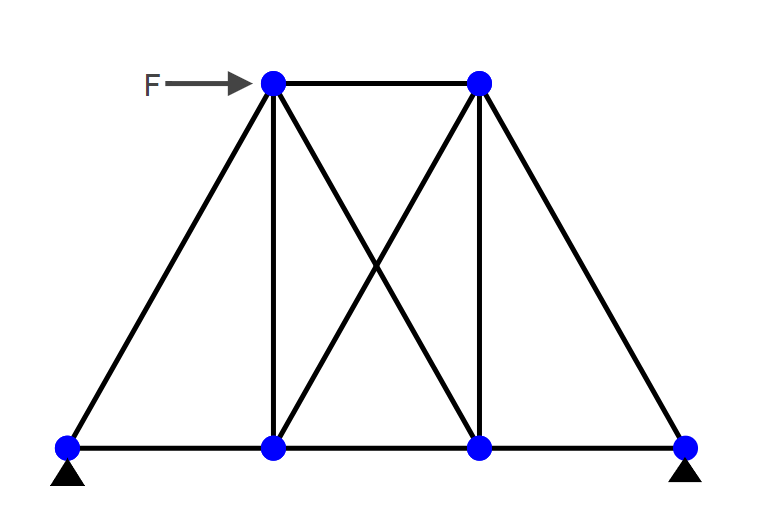

This visulization talks about solving the static deformation of a redundant structure. First of all the method of Finite Element is used to performe the calculation using the assembled stiffness matrix. Then another method described in detail in 2nd year Structural Mechanics and Dynamics notes, which utilizes the principal of virtual work. This methods is ssupposed to give exactly the same result as the direct stiffness method and the corresponding comparison is shown in the visulization page for redundant framework structure. The above methodology is applied to a fundamental structure often used in bridge structure and is of hope to provide a intuituive illustration of how this method can be applied in real life.

For a truss structure listed above, the stiffness matrix of a single typical member can be found. Here a single member corresponds to a single finite element. Each 2-dimensional pin-ended bar element can be considered as a rod element. Similarly to the theory explained in the rod, the global stiffness matrix for a single rod element, aligned of an angle α, with Young's Modulus E, length l and density ρ, is as following: $$ \mathbf{k} = \frac{E A}{l}\begin{bmatrix} 1&-1 \\ -1&1 \end{bmatrix} $$
Following this, a mapping scheme is applied to assemble the stiffness matrix for the whole structure.
For a frame the unit load method gives the delfection at the point where the virtual unit load is applied and in the direction of the unit load as: \[r=\int \bar{\sigma_{i}}\varepsilon _{i}dV = \sum_{i=0}^{no. of bars} \frac{\bar{N_{i}}N_{i}}{E_i A_i}L_i\]
To solve the problem with redundancy by hand, which is the case since only relative displacement can be found in this structure directly using unit load mehtod, the folloing steps would shown useful: